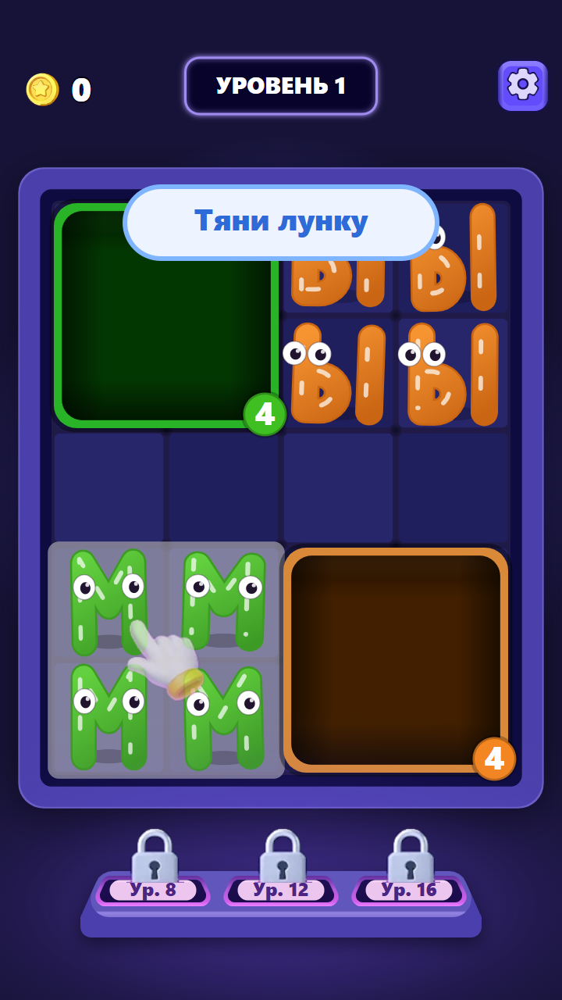
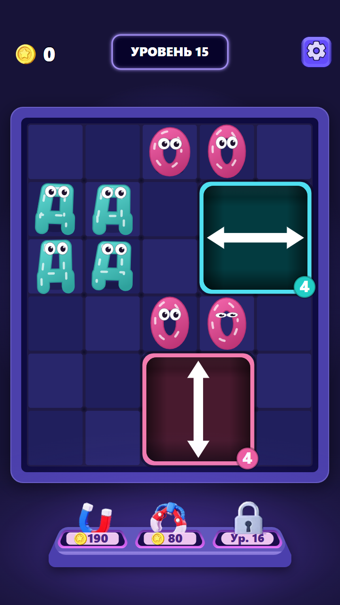
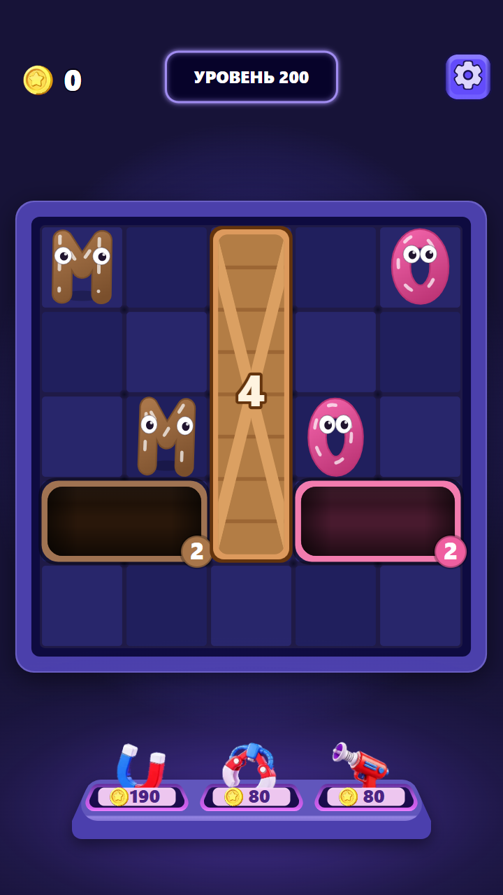
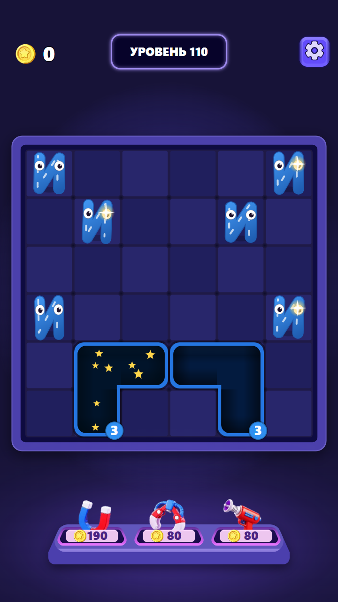
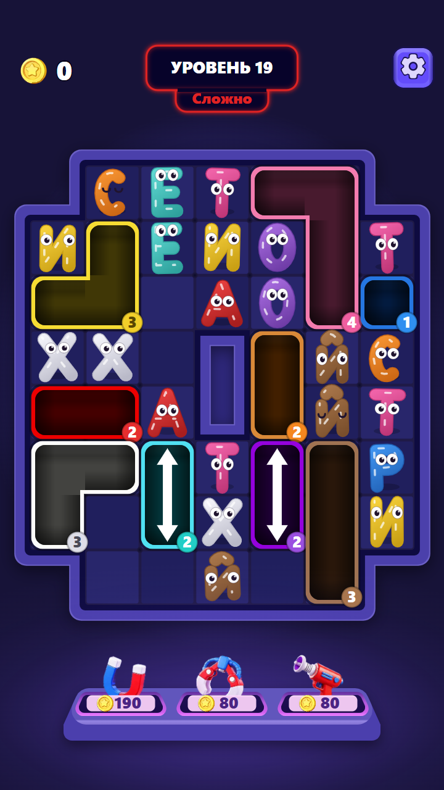
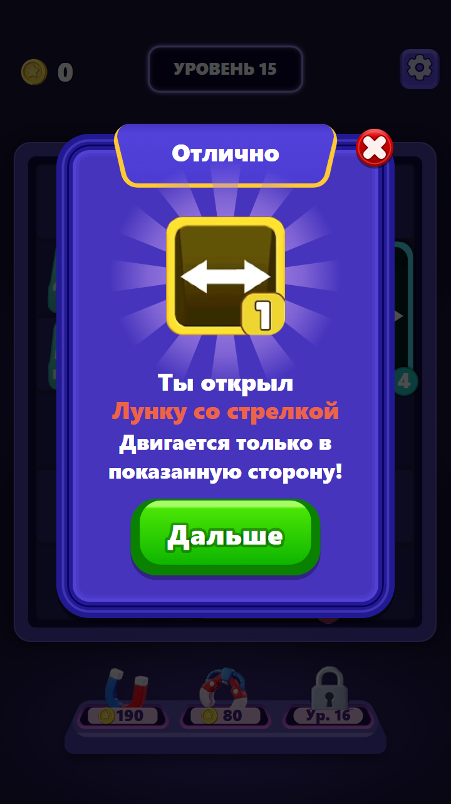
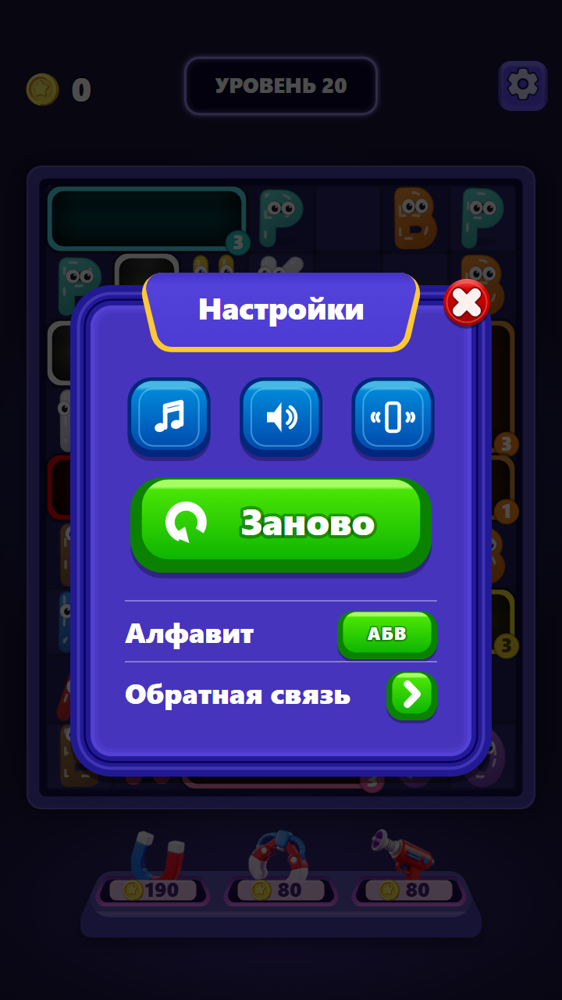
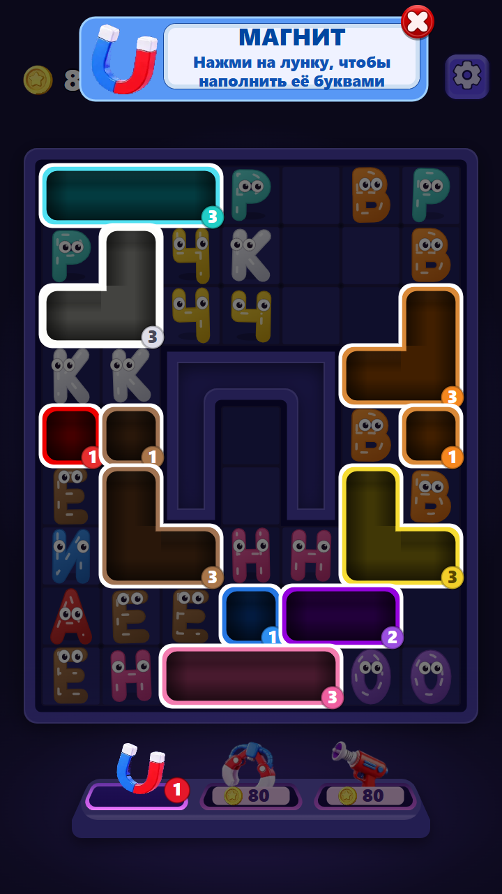
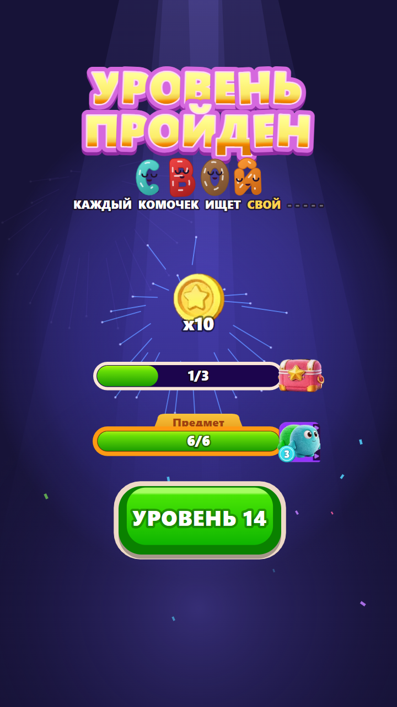
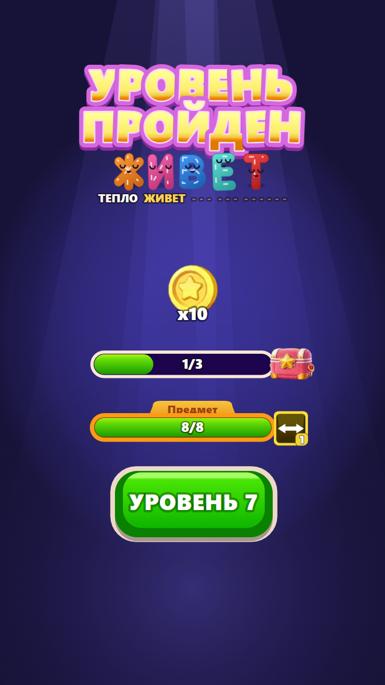

Fluffy Drop - экраны игры
Композиция целиком, 720x1280 - настоящий размер холста игры.

Доска: первый уровеньпалец подсказки, все три слота бустеров закрыты

Доска: лунка со стрелкойцены на бустерах, шахта

Доска: ящики

Доска: звёздные лунки

Доска: уровень с меткойязычок «Сложно» под плитой заголовка, красная метка

Попап новой механикиплашка с лучами, заголовок на язычке, зелёная кнопка, крестик

Настройкитумблеры со своими значками, кнопка «Заново», строки списка

Бустер взведёнбаннер вместо заголовка, доска притушена, слот подсвечен

Экран победылоготип, монеты, две полосы, слово уровня

Новый предмет